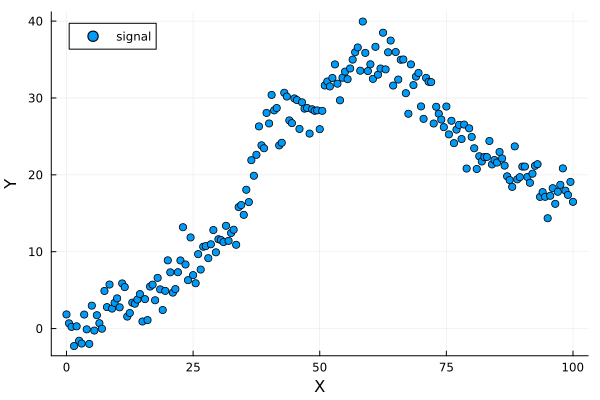
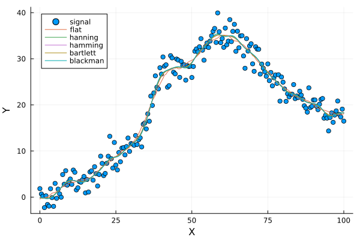
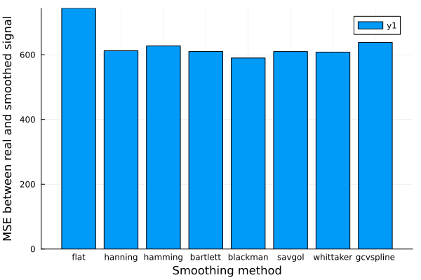

The source files for all examples can be found in /examples.
Smoothing data
This notebook highlights how signals can be smoothed with the smooth function.
using Plots, Spectra, Random, StatisticsSignal generation
x = collect(0:0.5:100)
peak_infos = [
Dict(:type => :gaussian, :amplitude => 10.0, :center => 40.0, :hwhm => 5.0),
Dict(:type => :gaussian, :amplitude => 20.0, :center => 60.0, :hwhm => 15.0),
]
peaks, total = create_peaks(x, peak_infos)
# some background: a large gaussian + linear
bkg = 10.0 .* sin.(x ./ 50.0) + 0.1 .* x
# real data have noise: here some Gaussian noise
noise = 2.0 * randn!(ones(size(x, 1)))
# the observed signal is:
y = total + noise + bkg
# Let's have a look at it using Plots:
p1 = scatter(x, y; label="signal",
xlabel="X", ylabel="Y",
legend=:topleft)
Smoothing
Now we loop other available methods to smooth the signal with default parameters. We could use window-based smoother for instance. For them, you can tune the window_length parameter to change the size of the smoothing window. Warning, it must be a positive odd integer.
methods_ = ["flat", "hanning", "hamming", "bartlett", "blackman"]
ese_methods_ = Float64[]
for i in methods_
y_smo = smooth(x, y, method=i, window_length=19)
plot!(x, y_smo, label=i)
push!(ese_methods_, sum((y - y_smo).^2))
end
We can also use Savitzky-Golay filter, Whittaker smoother, or GCVSpline. Again, changing defaults e.g. for savgol or whittaker may improve (or not) your smoothed signals! You need to try tuning them. Here we are doing a lazy job and use defaults. The most automatic method should be gcvspline because it uses Generalized-Cross-Validation (GCV) to find a good balance between signal smoothness and fitting.
methods_bis_ = ["savgol", "whittaker", "gcvspline"]3-element Vector{String}:
"savgol"
"whittaker"
"gcvspline"redo another plot for having a clean graph
p2 = scatter(x, y; label="signal",
xlabel="X", ylabel="Y",
legend=:topleft)
for i in methods_bis_
y_smo = smooth(x, y, method=i, window_length=21, polyorder=2, lambda=1e2)
plot!(x, y_smo, label=i)
push!(ese_methods_, sum((y - y_smo).^2))
endCompare performances
We can compare the performances of the different methods using a bar plot:
push!(methods_, methods_bis_...)
p_bar = bar(ese_methods_, xticks=(1:8,methods_),
xlabel="Smoothing method", ylabel="MSE between real and smoothed signal")
This page was generated using Literate.jl.